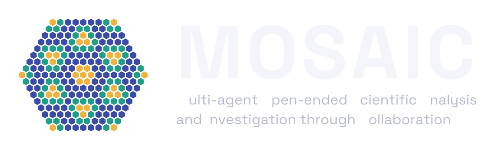

01Design the search space
A Claude Code agent, with a physicist
Proposes a momentum-dependent family of C = 1 bands that leaves ideal quantum geometry, its Fourier parametrization and a search boundary.

MOSAIC is a framework in which identical, autonomous AI agents work on an open question in physics together, coordinating only through a shared board. Searching flat bands beyond ideal quantum geometry, swarms of Claude Opus 5.5 agents found ν = 1/3 Laughlin states with gaps 11.5× and 15.8× those of their ideal-geometry parents. Isolated agents with the same tools did not get close.
Fractional Chern insulators host anyons, but their many-body gaps are small, which limits how warm and how robust these states can be. Ideal quantum geometry is usually taken as the best case for them. We asked AI to find out whether bands that break it could do better, and AI took part in every stage of the answer.
Proposes a momentum-dependent family of C = 1 bands that leaves ideal quantum geometry, its Fourier parametrization and a search boundary.

The agents share a board. GPU exact diagonalization checks every candidate band on three clusters. No human intervened during the search.

Reads the swarm's numbers and proposes sheared Landau levels: a simple model with an exact formula for the gap enhancement.
Most multi-agent systems put a planner in charge, so the search can only be as broad as the plan. In MOSAIC every agent gets the same brief and decides for itself what to try, whose results to build on and when to stop.
Each agent is a Claude Code session running Claude Opus 5.5, with its own worktree and notebook. Agents write their own analysis scripts and optimizers.
Typed, time-stamped posts: hypotheses, results, claims, refutations, notes and abandoned leads. An agent must post a hypothesis before spending more than ten evaluations on a direction.
A deterministic broker runs every candidate through GPU exact diagonalization. A band counts only if it stays a Laughlin state on the 21-site, 4×6 and 5×6 clusters, and every number on the board must quote a broker result.
At each wake-up an agent reads the board, decides, acts and updates its notebook. It stops when it judges nothing is left to try.
Can that momentum dependence raise the Laughlin gap above the parent's, robustly across cluster sizes? Is the gain a new mechanism, or only the changed density?
Only the momentum-dependent deformation is free.
Inside a fixed box of amplitude and phase coefficients, the method is the agent's choice.
A gain on one cluster is not a result.
Score R = Δ / Δparent, with Laughlin-phase gates on 21 sites, then 4×6, then 5×6.
Numbers come only from result.json. Negative results are first-class.
About one post in five should be a critique of another agent's claim. Watch for herding.
Nobody assigns you a role or a region; the swarm organizes itself through the board.
Every dot is a real evaluation request, every arc a real citation or message, every post a real entry on the board. Gold traces the relay that built the best band. The two isolated agents on the right had the same brief and tools, but no board.
Each pair shows the exact-diagonalization spectrum of a parent band with ideal quantum geometry and of the swarm's best band, on a 27-site cluster that was never used during the search. The threefold Laughlin ground states survive; arrows mark the gap Δ.


These gaps also exceed the benchmark M2(0) ΔLLL of the ideal-geometry framework, so a sharper charge density alone cannot explain them. On the clusters used in the search the strongest swarms reached Rmin = 10.8 and 16.3; the six isolated agents on model 1 reached 1.1 to 3.2.
Each swarm agent spent fewer evaluations and tokens than an isolated agent, so the advantage did not come from a larger budget. It came from how the agents worked together.

tune amplitude and phase terms together. The large gains need both, and different agents found the useful terms of each kind.

Agent b observed that only some terms help; j, i and p explained why with a selection rule; o, m and l tested it; b applied it. No single agent found this step.

An agent tests an idea by running many calculations. Every calculation it submits must carry a short label for the idea it tests, chosen by the agent at the time, like a folder name in a lab notebook. A strategy is one agent working on one label. Counting calculations would measure effort: one isolated agent ran 142 calculations in two hours under a single label. Counting labels measures how many different ideas were in play.
Cumulative tokens of the swarm agents in the six campaigns inside the search boundary. Each swarm uses about half its total in the first two hours; the total depends mostly on how many agents run, not on the model or how long the campaign lasts.
About 97% of these tokens are re-reads of each agent's own context. Claude Code caches the unchanged part of that context, so these re-reads are counted as tokens but billed far below fresh input. The totals measure how often a long context is re-read, not how much text the agents wrote, and they overstate the real cost.
Estimates at Opus 5.5 API prices: $4 per million fresh input tokens, $0.20 per million cache reads. The agents ran on a subscription, so there is no per-token bill to compare against.
Gaps up to 15.8× the parent's. Density cannot explain them, and the quantum geometry is far from ideal.
Too many properties change at once in the swarm's bands, so it asks for the simplest band with uniform density and uniform Berry curvature.
Shear every lowest-Landau-level orbital, (x, y) → (x, y + s x). The map preserves area, so only the quantum metric grows.
For short-range interactions the gap obeys
Δ / ΔLLL → 1 + s²/2
exact as ds → 0, and unbounded in s within a single band. The same mechanism, a steeper two-electron wavefunction at contact, also explains the swarm's bands.

The repository holds the swarm framework, the GPU exact-diagonalization solver used as the referee, and the data behind every figure of the paper, including the full board, mail and requests of each campaign. MIT license.
The broker, the board, the swarm command the agents use (digest, submit, post, mail, leaderboard), the charter and campaign briefs, and sandboxed launch scripts for Slurm.
Exact diagonalization for fractional Chern insulators in topological flat bands, on CPU and GPU, with phase gates for gap splitting, entanglement counting and the many-body Chern number. Built on MomentumED.jl.
The optimized bands, their 27-site spectra and the agents' records for every campaign.
uv run pytest tests/swarm -q
julia --project=julia -t 8 julia/ed_solver.jl \
--config julia/test/data/nk24_p024_a1M_kdep.json --out out.jsonMOIRE_ED_BACKEND=gpu julia --project=julia julia/ed_solver.jl \
--config data/bands/model1_optimized_5eda.json --out 5eda.json@article{zhang2026mosaic,
title = {Agentic Swarms Discover Enhancement of Fractional
Chern Insulator Gaps Beyond Ideal Quantum Geometry},
author = {Zhang, Yitong and Xu, Changwen and Li, Andrew Boshi and
Sarkar, Siddhartha and Sun, Kai and
Viswanathan, Venkatasubramanian},
year = {2026}
}